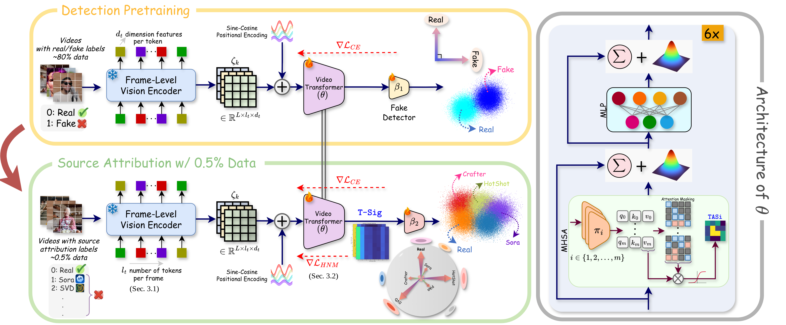
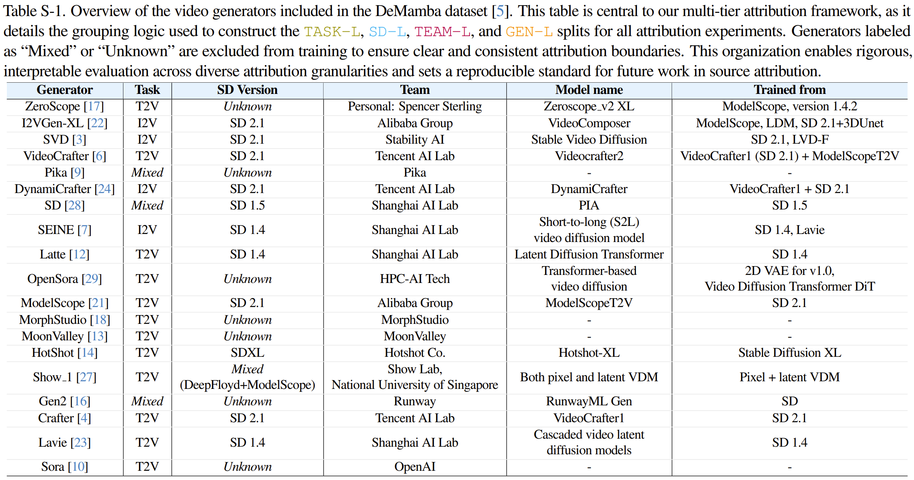
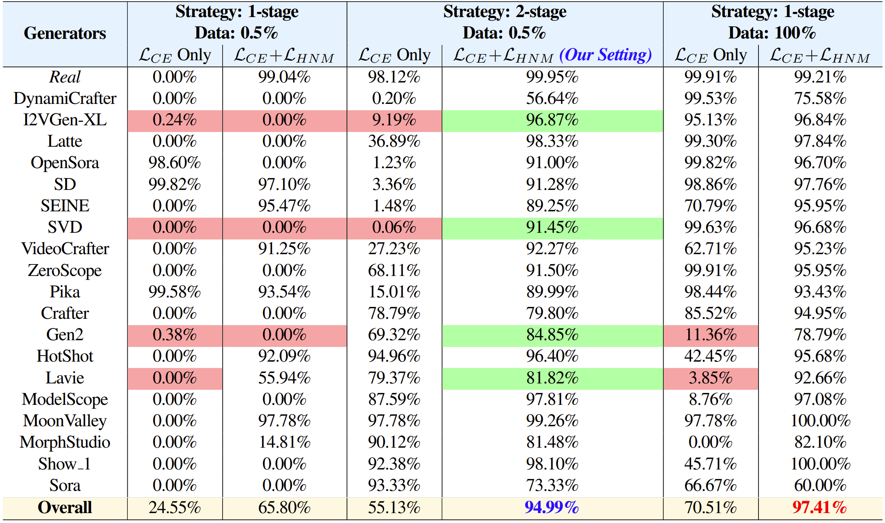
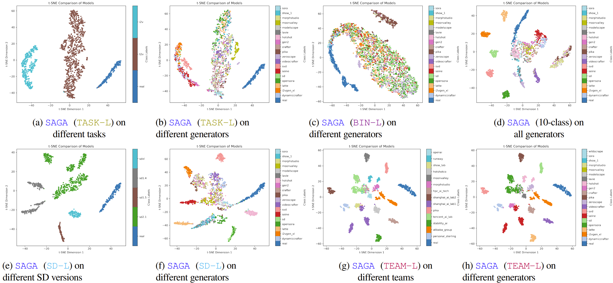
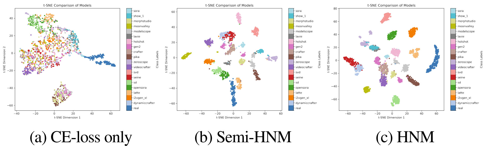
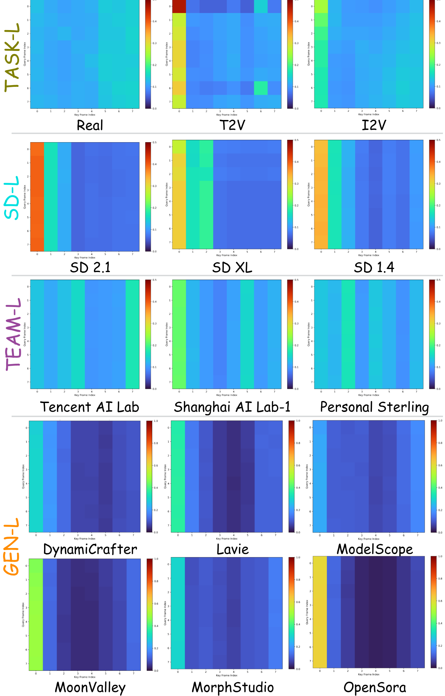

Abstract
Method

Overall framework of SAGA with a two-stage training approach. In Stage-1, each video \(x_k\) with real/fake labels is processed through a frozen foundational vision encoder to extract image-level features \(z_m\), which are stacked in temporal order to form the video representation \(\zeta_k\). Positional encoding is added, and the sequence is passed through our video transformer architecture \(\theta\) to obtain \(\phi_k\). The classifier \(\beta_1\) maps \(\phi_k\) to real or fake classes using a cross-entropy loss (\(\mathcal{L}_{CE}\)). In Stage-2, the pretrained video transformer is adapted for attribution into \(n_c\) classes (\(n_c\) defined by the attribution task) using only 0.5% of source-labeled data. Stage-2 incorporates an additional hard negative mining objective (\(\mathcal{L}_{\text{HNM}}\)) along with \(\mathcal{L}_{CE}\) for the attribution task.

Definition of Attribution Levels on the DeMamba dataset. We define five levels of attribution for synthetic videos: (1) Authenticity: Real vs. Fake (2 classes), (2) Generation Task: real vs. T2V vs. I2V (3 classes), (3) Stable Diffusion Backbone Version: e.g., SD 1.4 vs. SD 1.5 vs. SD 2.1 vs. SDXL (real vs. 4 total versions), (4) Development Team: e.g., Alibaba Group vs. Tencent AI Lab vs. ... (real vs. 14 different teams), and (5) Precise Generator: e.g., ZeroScope vs. I2VGen-XL vs. ... (real vs. 19 different video generator models). Each level provides increasingly granular insights into the source of the synthetic video, with the precise generator level offering the most specific attribution. Check our supplementary material for more information.
Results

GEN-L classification results (Accuracy) with different settings of the SAGA framework. SAGA is able to achieve results close to the 100% setting, by only using 0.5% of source-labeled data (the 100% data setting has ~1.6M training samples). In many cases (as highlighted), the performance drops close to 0.00% for certain difficult generators, but the ℒHNM objective mitigates these missed detections even while using a small fraction of the data, especially with the proposed 2-stage training.
Quantitative results for the other attribution levels are in our main paper Tables 2-6.

t-SNE visualization of SAGA's learned representations trained on the
(a-b)TASK-L,
(c-d)BIN-L,
(e-f)SD-L, and
(g-h)TEAM-L
attribution tasks, respectively. Even when supervised at coarser levels, SAGA distinctly clusters individual generators, revealing strong fine-grained discriminative ability.

t-SNE visualization of SAGA on the GEN-L attribution task with different loss functions. The HNM objective clearly helps in separability of the different generators, compared to using only the CE loss or the semi-HNM objective.

T-Sigs for classes in the different attribution levels. Each class produces a distinct and consistent temporal attention signature, which provides interpretability to the model's predictions and insights into the unique temporal artifacts of different generators.
Check our main paper and supplementary for more detailed results, analyses and ablations.


BibTeX
@inproceedings{kundu2026saga,
title={SAGA: Source Attribution of Generative AI Videos},
author={Kundu, Rohit and Mohanty, Vishal and Xiong, Hao and Jia, Shan and Balachandran, Athula and Roy-Chowdhury, Amit K},
booktitle={Proceedings of the Computer Vision and Pattern Recognition (CVPR) Conference},
year={2026}
}Copyright: CC BY-NC-SA 4.0 © Rohit Kundu | Last updated: 21 Feb 2026 | Website credits to Nerfies